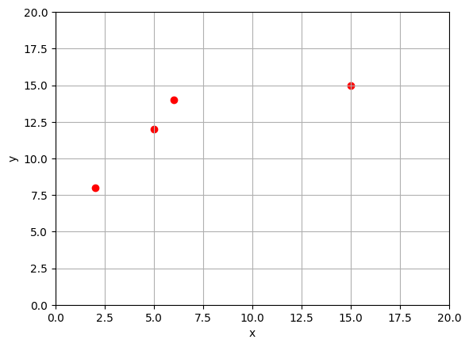

선형 시스템을 풀어야 할 필요성은 다양한 분야에서 발생합니다. 선형 시스템의 예를 보여드리겠습니다. 또한 행렬 대수를 암호화와 그래프 이론에 적용하는 방법에 대해서도 설명합니다.
Interpolation
보간은 알려진 값 사이에 있는 미지의 데이터 값을 추정하는 프로세스입니다. 이 프로세스에는 일반적으로 알려진 데이터 포인트 집합을 통해 곡선을 피팅하여 미지의 값을 예측하는 작업이 포함됩니다. 곡선은 일련의 매개변수로 설명되며, ’곡선을 맞추는 것’은 곡선이 데이터를 가장 잘 나타내도록 매개변수를 선택하는 것을 의미합니다. 곡선을 맞추는 간단한 방법은 곡선이 제공된 모든 데이터를 통과하도록 하는 것입니다.
데이터 포인트 \((2,8)\), \((5,12)\), \((6,14)\) 및 \((15,15)\)를 예로 들어 보겠습니다.
import matplotlib.pyplot as pltimport numpy as npimport linear_solver as lsx = np.array([2,5,6,15])y = np.array([8,12,14,15])fig,ax = plt.subplots()ax.scatter(x,y,color='red');ax.set_xlim(0,20);ax.set_ylim(0,20);ax.set_xlabel('x');ax.set_ylabel('y');ax.grid(True)

다항식은 보간에 사용되는 일반적인 곡선입니다. 이 경우 데이터 포인트가 4개이므로 그래프가 각 포인트를 통과하기 위해 충족해야 하는 방정식이 4개가 있습니다. 방정식을 만족하는 매개변수가 4개이므로 3차 다항식인 \(P_3\)을 선택합니다.
우리가 생성하는 곡선이 실제로 각 데이터 포인트를 통과하지만, 이 다항식은 기본 프로세스의 최상의 모델이 아닐 수 있습니다. 한 가지 잠재적인 우려는 곡선이 세 번째와 네 번째 데이터 요소를 직접 연결하는 것이 아니라 진동을 나타내는 것처럼 보인다는 것입니다. 데이터 포인트 집합에 맞는 곡선을 만들 때 단순히 곡선이 각 포인트를 통과하도록 하는 것보다 더 중요한 다른 요소가 있을 수 있습니다.